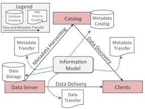
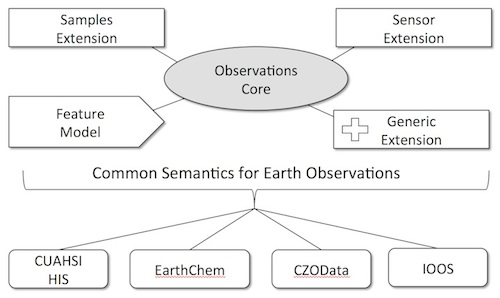

ODM2 Information Model
ODM2 is a community information model aimed at extending interoperability of feature based earth observations derived from sensors and samples and improve the capture, sharing, and archival these data. ODM2, is being designed from a general perspective, with extensibility for achieving interoperability across multiple disciplines and systems that support publication of earth observations.

Several geoscience cyberinfrastructures use a services oriented architecture (SOA). The information model is central to SOA and specifies the information requirements and semantics of data encodings for storage and transfer of data and metadata. A common information model enables interoperability among data server, client, and catalog components of the SOA.
View documentation for ODM2 for a more detailed description of the information model and it's features and functionality.
Visit the ODM2 GitHub repository to access blank schemas for relational database implementations and scripts for populating controlled vocabularies.
Have a look at the ODM2 paper in Environmental Modelling & Software. It's open access!
Horsburgh, J. S., Aufdenkampe, A. K., Mayorga, E., Lehnert, K. A., Hsu, L., Song, L., Spackman Jones, A., Damiano, S. G., Tarboton, D. G., Valentine, D., Zaslavsky, I., Whitenack, T. (2016). Observations Data Model 2: A community information model for spatially discrete Earth observations, Environmental Modelling & Software, 79, 55-74, http://dx.doi.org/10.1016/j.envsoft.2016.01.010
Development Approach
We are working to make the ODM2 information model and software tools consistent with the architectures of multiple existing cyberinfrastructures in the geosciences and to enhance domain-specific information models and encodings in a way that will assist data publishers in sharing data, enhance the semantic and syntactic consistency of data from different geoscience domains, and increase the cross-domain discoverability, accessibility, and integration of earth observations for data consumers. Our development approach is focused on development of a core set of observations metadata that are common to most, if not all, observational data. Extensions to the observations core pprovide added functionality for additional use cases:

ODM2 Software Ecosystem
Data capture is a critical point in the data life cycle. We are developing software tools to support, aid, and encourage reliance on the ODM2 information model during data collection and analysis to ensure that the information model enhances scientists’ ability to work with data during analysis and at the same time capture metadata critical for later sharing and publication. Software we are developing includes the following list. A more comprehensive and descriptive list is available in the documenation within the ODM2 GitHub repository.
- ODM2 Python API - A cross platform, Python and SQL Alchemy-based application programming interface (API) for ODM2
- ODM2 Streaming Data Loader - A Python based program for loading streaming sensor data into ODM2
- ODMTools Python - A Python based program for visualizing and managing sensor datasets in ODM2
- ODM2 Equipment Management - A web application and database for managing field deployments of environmental sensors and metadata for field related activities
- ODM2 Controlled Vocabularies - A community moderation system for ODM2 controlled vocabularies
- YODA-File - A YAML-based file format implementation of ODM2 for encoding ODM2 datasets for exchange
- YODA-Tools - A set of utilities for validating and working with YODA files
- ODM2 RESTful Web Services - Python-based web services for serving ODM2 datasets via RESTful web services
- WOFpy - Python-based web services for publishing time series data from an ODM2 database as WaterML
- Time Series Analyst - A Python/Django-based web application for visualizing environmental time series data served via WaterML web services
- ODM2 Web Streaming Data Loader - A Python/Django-based web application and web service for registering data collection devices and streaming sensor observations into an ODM2 database
- ODM2 Admin - A web-based Django/Python admin application for loading data, visualizing, and managing sample data within an ODM2 database instance
Contact
Vist the ODM2 GitHub repositories to contact us or to submit issue or feature requests.
Support
This material is based upon work supported by the National Science Foundation Grant EAR 1224638. Any opinions, findings, and conclusions or recommendations expressed in this material are those of the author(s) and do not necessarily reflect the views of the National Science Foundation.